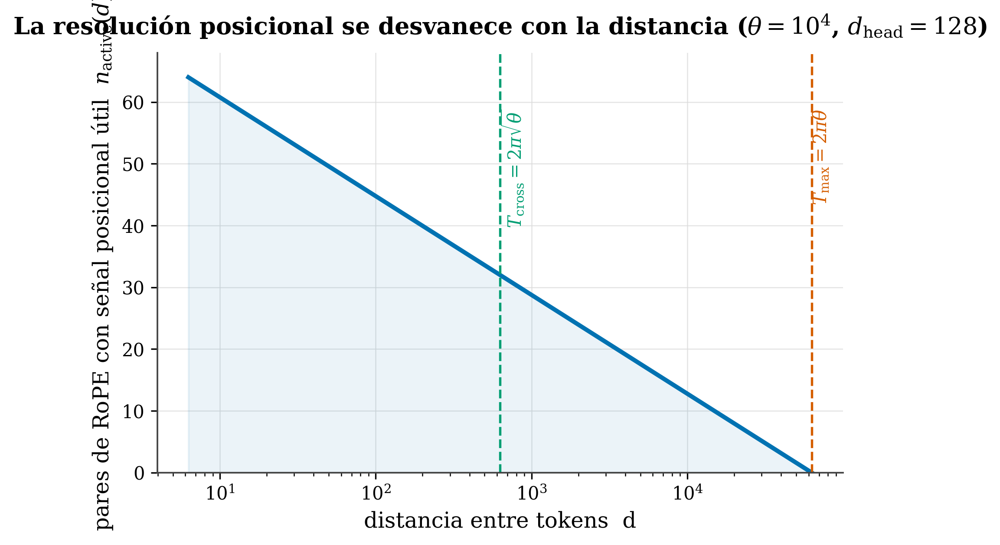

15 Aliasing and the three scales of RoPE
Where we are. In Ch. 13 we saw that, when averaged, attention loses resolution with distance. Why? The answer lies in the geometry of RoPE: its frequencies have wavelengths, and the fast ones “fold over” (aliasing) right away. This chapter explains that mechanism and defines the scales that mark how far the model can tell positions apart —the foundation of the γ law of Ch. 15—.
15.1 The idea in one sentence
Each pair of RoPE dimensions rotates at a different speed; the ones that rotate fast repeat soon and stop telling distances apart (aliasing), so the farther out, the fewer pairs keep positional signal → resolution is lost.
15.2 Key concepts and their role in the transformer
Before getting into detail, we define this chapter’s terms and what each one is for inside a transformer:
- RoPE frequency (\(\omega_i\)). Definition: the speed at which pair i of dimensions rotates, \(\omega_i = \theta^{-2i/d}\). In the transformer: it’s what encodes the position of each token; low indices rotate fast, high ones barely rotate.
- Wavelength (\(\lambda_i\)). Definition: after how many positions a pair completes a full turn and returns to the same angle, \(\lambda_i = 2\pi\,\theta^{2i/d}\). In the transformer: it marks each pair’s reach; short λ = fine-grained local detail, long λ = long-range structure.
- Base θ. Definition: RoPE’s hyperparameter (10000 by default) that sets the scale of all the wavelengths. In the transformer: the “knob” that decides how far the model can tell positions apart; rescaling it extends the context.
- Aliasing. Definition: when a pair, past its λ, can no longer tell a distance \(r\) from \(r+\lambda\) — both give the same angle. In the transformer: it’s the root cause of position becoming ambiguous far out, not just of weight being damped.
- \(n_{\rm active}(d)\). Definition: the number of pairs that still keep positional signal at distance d. In the transformer: it quantifies how much positional resolution the model has left at each distance.
- The three scales. Definition: \(\lambda_0\approx2\pi\) (local grain), \(T_{\rm cross}=2\pi\sqrt\theta\) (starts to degrade) and \(T_{\rm max}=2\pi\theta\) (runs out). In the transformer: they’re the critical distances, fixed by θ alone, that in Ch. 15 we’ll connect to the exponent γ.
- Attainable positional resolution. Definition: which distances the model can tell apart, bounded by the geometry. In the transformer: the geometry sets the limit; how the model uses each band within it is up to it (not a decree).
In short: RoPE’s geometry doesn’t impose how the model attends, but it does bound how far it can tell positions apart — the foundation of the γ law of the next chapter.
15.3 RoPE’s frequencies and their wavelength
Recall (Ch. 8): RoPE rotates the pair of dimensions i at a frequency \(\omega_i = \theta^{-2i/d}\). Each frequency corresponds to a wavelength:
\[ \lambda_i = 2\pi\,\theta^{\,2i/d} \]
What each term says:
- \(\lambda_i\) = after how many positions that pair completes a full turn (2π) and returns to the same angle.
- \(\theta\) = RoPE’s base (10000 by default); larger θ → longer wavelengths in general.
- low index \(i\) → short λ (e.g. pair 0 has λ≈2π≈6 positions): rotates fast. high index → enormous λ: barely rotates over the whole context.
- \(d\) = the head dimension (\(d_{\rm head}\)); \(i\) numbers the pair of dimensions (0, 1, 2…).
15.4 Aliasing: why resolution is lost
Here’s the crux. A pair that rotates fast completes full turns right away. Past its wavelength λ, it can no longer tell a distance \(r\) from \(r+\lambda\): both give the same angle, the same dot product. That pair aliases —folds over— and stops contributing unique positional information.
🧩 Analogy — the wagon wheel in the movies. In old films, wheels sometimes seem to spin backward or stand still: the camera “samples” slower than the real rotation, so a 350° turn is indistinguishable from a −10° one. RoPE’s fast pairs are that wheel: past their λ, “distance 5” and “5 + one full turn” look identical.
As distance grows, more pairs (of increasing wavelength) get folded, so fewer and fewer pairs keep unambiguous positional signal. That is the loss of resolution, and it’s not just that weight gets damped: it’s that position becomes ambiguous.
15.5 The three scales
We can count how many pairs are still “alive” at distance d. That count (from our Paper I (Marín 2026)) is:
\[ n_{\rm active}(d) = \frac{d_{\rm head}}{2}\left(1 - \log_\theta\!\frac{d}{2\pi}\right) \]
- \(d_{\rm head}/2\) = total number of frequency pairs in a head.
- \(\log_\theta(d/2\pi)\) (the logarithm in base θ) = what fraction of those pairs has already aliased at distance d. (Here d is the distance between tokens, not the head dimension \(d_{\rm head}\) in the formula above.)
- \((1-\dots)\) = the fraction that survives.

This defines three natural scales (with θ=10⁴):
- \(T_{\rm cross} = 2\pi\sqrt{\theta}\) (≈ 628): the scale where resolution starts to degrade appreciably.
- \(T_{\rm max} = 2\pi\theta\) (≈ 62,832): the wavelength of the slowest pair; beyond it, no pair keeps unambiguous positional signal (\(n_{\rm active}\to 0\)).
- (And the shortest, \(\lambda_0 \approx 2\pi\), the fine local grain.)
These scales, fixed by θ and the geometry alone, are the ones we’ll connect to the decay exponent γ in Ch. 15.
Beware of overselling this. Recent work (Round and Round We Go (Barbero et al. 2024)) shows that RoPE does not impose a monotonic decay: with real queries/keys there’s no guaranteed decay, and in fact models use the low frequencies to match content almost regardless of position. So we will not say “RoPE forces attention to decay”. What we do hold —and it’s compatible with that work (its Theorem 6.1 proves that those low-frequency channels are not robust in long context)— is that the geometry bounds the attainable positional resolution: it marks which distances can be told apart. How the model uses each band within that limit is up to it. That’s why, in Ch. 15, γ will be a measured descriptor of trained models, not a law imposed by geometric decree.
15.6 A pointer: stretching the wavelengths
Since the λ’s depend on θ, rescaling θ (NTK-aware, YaRN) stretches them —and with them the range of distances the model tells apart—. It’s the basis of context extension (Ch. 19): moving the scales so the model works beyond its training length.
15.7 Summary
- Each RoPE pair has a wavelength \(\lambda_i = 2\pi\,\theta^{2i/d}\): low index = short λ (rotates fast), high = long λ.
- Aliasing: past its λ, a pair can’t tell \(r\) from \(r+\lambda\) → it stops giving a unique position. The farther out, the more pairs folded → less resolution.
- \(n_{\rm active}(d)\) counts the live pairs; it defines \(T_{\rm cross}=2\pi\sqrt\theta\) (starts to degrade) and \(T_{\rm max}=2\pi\theta\) (runs out).
- Honest: the geometry bounds the attainable resolution; it does NOT impose decay (cf. Round and Round (Barbero et al. 2024)). γ will be a measured descriptor, not a decree.
- Rescaling θ stretches the λ’s → extends the context (Ch. 19).
Next (Chapter 15): with the geometry clear, we reach the heart of our work — the decay law A(d) ∝ d^−γ and, above all, how to predict γ.
15.8 Exercises
- Wavelength. With θ=10000 and d=64, which pair rotates faster, index i=0 or i=30? Which aliases sooner?
- Aliasing. Use the wheel analogy to explain why a RoPE pair cannot tell one distance from another that differs by exactly one wavelength.
- The scales. What does \(T_{\rm max}=2\pi\theta\) represent? What happens to \(n_{\rm active}\) there?
- Honesty. Why do we say the geometry “bounds the resolution” rather than “imposes the decay”? (Think about what Round and Round proved.)